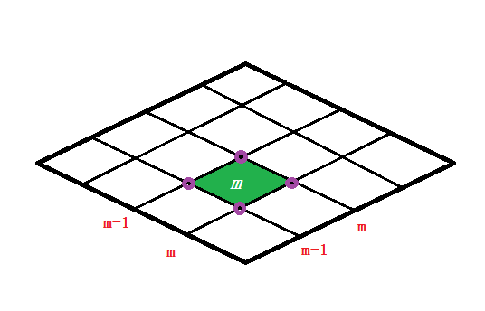
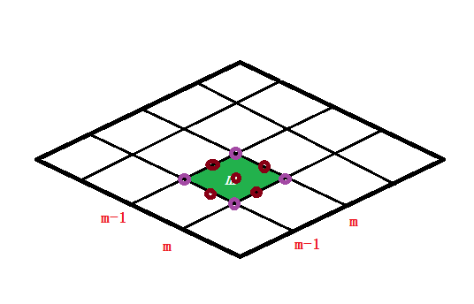

上限法塑性功数值积分算例：二重积分¶
发布于：2014-11-28 | 分类：numeric calculation
上限法是一种解析方法，但有时候模型比较复杂，在塑性功积分环节还得求助于数值积分。根据积分方法的不同，存在以下两种思路：
-
直接进行高斯积分
-
单元离散后进行低阶数值积分
本文分别使用以上两种方法计算下面二重积分，以直观认识及分析二者的区别：
理论解¶
\begin{align*} W &= -\dfrac{2}{\pi}\,\int\limits_{-1}^1{\left.{\sin\dfrac{\pi\,(x+y)}{2}} \right|_{-1}^1} \,\mathrm{d}y\\ &= -\dfrac{2}{\pi}\,\int\limits_{-1}^1{\biggl[\sin\dfrac{\pi\,(y+1)}{2}-\sin\dfrac{\pi\,(y-1)}{2}\biggr] }\,\mathrm{d}y \\ &= -\frac{4}{\pi^2}\left. {\biggl[ {\cos\frac{\pi\,(y+1)}{2} - \cos\frac{\pi\,(y-1)}{2}}\biggr]}\right|_{-1}^1 \\ &= -\frac{16}{\pi ^2} \approx 1.6211 \end{align*}
高斯积分¶
由于目标函数恰好在Gauss-Legendre的标准积分区间[-1,1]，可以直接取积分点代入二重高斯积分公式。于是W的n阶Gauss-Legendre积分近似值就可通过下式求得
其中x_i,\,x_j分别为x,\,y方向的积分点，A_i为对应的积分系数。
积分点及求积系数的求解可以参考相关文献。为方便起见，这里直接给出前2阶Gauss-Legendre求积公式的节点及系数：
| 阶数n | 积分点\mathrm{x} | 求积系数\mathrm{A} |
|---|---|---|
| 0 | 0 | 2 |
| 1 | \biggl[-\dfrac{1}{\sqrt{3}},\,\dfrac{1}{\sqrt{3}}\biggr] | \biggl[1,\,1\biggr] |
| 2 | \biggl[-\dfrac{\sqrt{15}}{5},\,0,\,\dfrac{\sqrt{15}}{5}\biggr] | \biggl[\dfrac{5}{9},\,\dfrac{8}{9},\,\dfrac{5}{9}\biggr] |
以上公式很容易编写为Matlab代码，以2阶高斯积分为例
function w = fun_gauss(f)
x = [-sqrt(15)/5,0,sqrt(15)/5];y = x;
[X,Y] = meshgrid(x,y);
a = [5/9,8/9,5/9];b = a;
[A,B] = meshgrid(a,b);
w = sum(sum(A.*B.*f(X,Y)));
于是得到
单元离散后积分¶
为简单起见，将积分区域离散为N=n^2个面积相等的小区域，则每个单元的面积\Delta S=\dfrac{4}{N}。当单元m足够小时，可以以单元4个节点对应函数值的平均值来近似该单元区域内被积函数值，于是W可以表示为
\begin{align*} {W_n} &= \sum_{m=1}^{N} {\int\limits_{y_{m-1}}^{y_m} {\int\limits_{x_{m-1}}^{x_m}} {f(x,\,y)\,\mathrm{d}x\mathrm{d}y} } \\ &= \sum_{m=1}^{N} {\left[{\frac{1}{4}\sum_{i=1}^2 {\sum_{j=1}^2 {f(x_i,\,y_j)\,\Delta S}}} \right]} \\ &= \Delta S\,\sum_{m=1}^{N} {\sum_{i=1}^2 {\sum_{j=1}^2 {\frac{f(x_i,\,y_j)}{4}} } } \end{align*}
其中x_1,\,x_2为单元m的节点的两个横坐标。

上式可以理解为将区域离散后，每个单元的每个节点都为最终的积分值贡献¼的作用。单从节点来看，内层节点贡献为1，边界节点（除4个角节点外）贡献½，4个角节点贡献¼。这很容易通过Matlab编程实现，代码如下：
function w = fun_trapezoid(n,f)
[X,Y] = meshgrid(linspace(-1,1,n));
a = f(X(2:n-1,2:n-1),Y(2:n-1,2:n-1));
b = f(X(1,:),Y(1,:))+f(X(n,:),Y(n,:));
c = f(X(:,1),Y(:,1))+f(X(:,n),Y(:,n));
d = f(X(1,1),Y(1,1))+f(X(1,n),Y(1,n))+f(X(n,1),Y(n,1))+f(X(n,n),Y(n,n));
t = sum(sum(a)) + sum(b)/2 + sum(c)/2 - d/4;
w = 4*t/n^2;
于是得到
这样的积分结果差强人意，单元数达到5000×5000才勉强保证小数点后2位精度。
为了改善精度，在子域上使用Simpson求积公式，得到
\begin{align*} {W_n} &= \sum_{m=1}^{N} {\int\limits_{y_{m-1}}^{y_m} \int\limits_{x_{m-1}}^{x_m} {f(x,\,y)\,\mathrm{d}x\mathrm{d}y} } \\ &= \sum_{m=1}^{N} {\left[{\frac{1}{36} \sum_{i=1}^3 {\sum_{j=1}^3 {A_i\,A_j\,f(x_i,\,y_j)\,\Delta S}}} \right]} \\ &= \dfrac{\Delta S}{36}\,\sum_{m=1}^{N} {\sum_{i=1}^3 {\sum_{j=1}^3 {A_i\,A_j\,f(x_i,\,y_j)} } } \end{align*}
其中x_1,\,x_2,\,x_3分别为单元m边界的三个等分点的横坐标。A=[1,4,1]为积分系数。

Matlab代码为
function w = fun_simpson(n,f)
t = 2/n;
[A,B] = meshgrid([1,4,1],[1,4,1]);
w = 0.0;
for i = 0:n^2-1
x = mod(i,n);
y = floor(i/n);
x = -1 + x*t;
y = -1 + y*t;
[X,Y] = meshgrid(linspace(x,x+t,3),linspace(y,y+t,3));
w = w + sum(sum(A.*B.*f(X,Y)/(3*n)^2));
end
最终计算结果为
总结¶
高斯积分以积分点的计算为代价可以在较少积分点的情况下获得一定的精度，而离散积分的方法以离散单元数为代价来提高精度；但是精度会因为子域上选取的积分方式的不同而表现出较大的差异：只有单元节点参与计算时，精度相对较低；当单元边界中点也加入计算，精度得以大幅度提高。
区域离散后积分的方法本质上是复化求积法。通过划分子区间并在子区间上使用低阶求积公式来提高精度并兼顾计算复杂程度。第一种求积方法是梯形公式，第二种是精度更高的Simpson公式（即2阶Newton-Cotes公式）。这种方法的优势在于当积分区域极不规则时，可以通过离散的方法在子区间上进行积分并最终累加。例如实际三维成形问题，由于积分区域无法直接写成显式的积分上下限形式，因此也无法直接在全域上使用高斯求积公式。
综合来看，在上限法分析模型中，一般二维即平面应变或轴对称模型的积分区域是规则的，因此高斯积分法相对更有应用优势；而三维问题变形区通常较为复杂，离散求积的方法更具优势，且离散区域上的Simpson公式也可以保证精度。